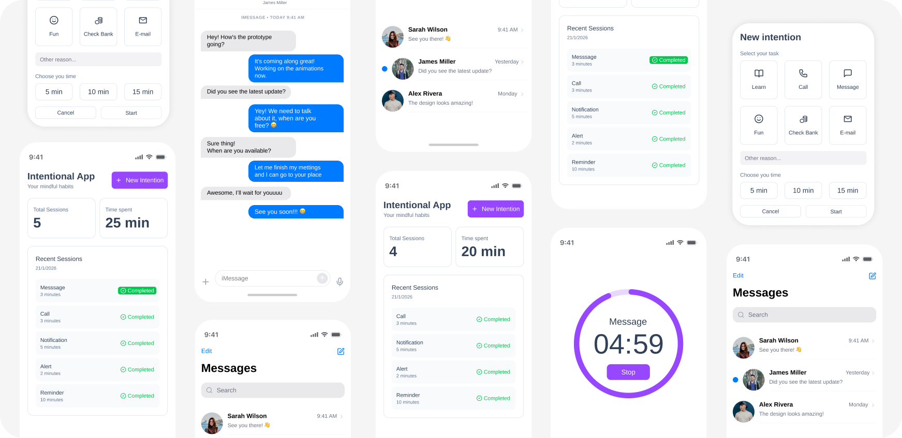

Increasing user agency through intentional app

Introduction
Many young adults and teenagers struggle with mindless phone use, often opening apps without a clear purpose. While this behavior may seem harmless at first, it frequently leads to wasted time, distraction, and reduced focus on meaningful tasks. Users reported feeling guilty or frustrated after prolonged, unconscious scrolling, but rarely paused to reflect on their digital habits.
This UX case study showcases my step-by-step journey to designing a mindful interaction flow that encourages users to pause, clarify their intentions, and make conscious choices every time they interact with their phone, helping them regain control over their digital wellbeing.
Problem Definition
Users experience unconscious, mindless phone interactions because they often open apps without reflecting on their purpose. This habitual behavior leads to wasted time, distraction, and feelings of guilt or frustration, reducing focus and overall digital wellbeing.
HOW MIGHT WE...
How might we help young adults and teenagers pause, reflect, and act intentionally every time they interact with their phone?
Goals
Help users engage with their phone intentionally, reducing mindless interaction and promoting digital wellbeing.
Promote healthier digital habits to position the app as a trusted wellbeing tool.
Encourage users to pause and reflect before opening any app. Support users in clarifying their intention, making each phone interaction purposeful.
Track habits over time to build mindful, sustainable phone use patterns. Provide quick feedback and gentle nudges to maintain awareness.
Assumptions
- Users often interact with their phones automatically, without pausing to consider their intention.
- Users may underestimate the time or impact of mindless phone use on focus, productivity, and wellbeing.
- Users don't have an established mental model for intentional digital habits; most phone interactions are habitual.
- Reflection prompts and intentionality nudges can influence behavior, but effectiveness may vary across users depending on motivation and self-awareness.
- Users may resist friction if prompts are too frequent or intrusive, potentially leading to disengagement.
- Tracking habits and providing feedback will increase self-awareness, but only if presented in a simple, non-judgmental way.
User Personas
Alex, High School Student
18
Final-year high school student juggling classes, exams, and friendships
Stay focused on studying and hobbies without constant distraction
Opens phone automatically when bored or stressed; jumps between apps without intent
Feels frustrated after long scrolling sessions; struggles to stop once started
Wants better concentration and less stress before exams
Simple prompts that encourage pausing and thinking before opening apps
Maya, University Graduate
24
Recently graduated, adjusting to independent life and work/study routines
Be more intentional with time and maintain healthy routines
Unlocks phone out of habit during breaks, often losing track of time
Feels guilty when phone use interferes with productivity or sleep
Wants balance, mental clarity, and a sense of control over daily life
A mindful system that helps reflect on intention without feeling restrictive
Ideation
- Prompt users to pause before every app interaction.
- Ask users to clarify their intention quickly (select from list or type short text).
- Provide minimal, clear feedback on their choice to avoid frustration.
- Track patterns over time and visualize progress to reinforce mindful use.
To address this, I proposed and designed Intentional app. Each time users start to interact with their phone, they have to declare a mindful intention. The system prompts them to:
- Identify their goal or intention for opening the app.
- Reflect on time consumption and session per day.
- Build a healthy relationship with their phone.
Solution: Intentional App
| FEATURE | UI PATTERN | OUTCOME |
|---|---|---|
| Intent Prompt | Overlay to set user's intention with quick-select options. User can add a customized intention | Users pause and reflect before each interaction, reducing mindless use |
| Suggested Time Session | Options: 5, 10 and 15 minutes | Reinforces short sessions and user's commitment |
| Timer | Timer running with a "stop" button | Gives users control to finish the session |
| Number of Session Tracking | Card showing number of daily sessions | Supports reduction of unconscious micro-sessions |
| Time Consumption | Card showing daily consumption time | Helps users understand total time interaction |
| Sessions Tracking | Mini session dashboard showing session time, time and status | Users are able to reflect on their actions |
Final Prototype
View Intentional App Prototype on FigmaConclusion
After assessing Intentional app with real users, I observed that:
100%
of sessions began with a clearly declared intention
30%
of users decreased total time spent on apps
18%
increase in self-reported satisfaction and sense of control